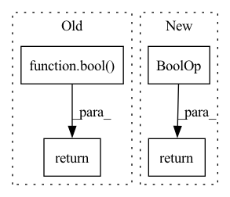

Pattern ID :16462
Before Change
for feature in model.input_spec().values())
supported_output_features = utils.find_spec_keys(model.output_spec(),
compatible_output_types)
return is_tabular and bool( len(supported_output_features))
def config_spec(self) -> types.Spec:
return {
EXPLAIN_KEY:After Change
name in input_spec_keys for name, feature in dataset.spec().items())
has_outputs = utils.spec_contains(model.output_spec(),
compatible_output_types)
return is_tabular and has_outputs
def config_spec(self) -> types.Spec:
return {
EXPLAIN_KEY:In pattern: SUPERPATTERN
Frequency: 3
Non-data size: 4
Instances Fragment ID: 55370269
Project Name: pair-code/lit
Commit Name: ecd3a6623f2a0d45ae26c74d0d72fb68b7bcb9aa
Time: 2022-11-03
Author: ryanmullins@google.com
File Name: lit_nlp/components/shap_explainer.py
M Class Name: TabularShapExplainer
N Class Name: TabularShapExplainer
M Method Name: is_compatible(3)
N Method Name: is_compatible(2)
M Parent Class: lit_components.Interpreter
N Parent Class: lit_components.Interpreter
M File Name: lit_nlp/components/shap_explainer.py
N File Name: lit_nlp/components/shap_explainer.py
M Start Line: 72
M End Line: 77
N Start Line: 68
N End Line: 79
Before Change
supported_preds = (types.MulticlassPreds, types.RegressionScore)
input_fields = utils.find_spec_keys(model.input_spec(), supported_inputs)
output_fields = utils.find_spec_keys(model.output_spec(), supported_preds)
return (bool( input_fields) and bool(output_fields))
def config_spec(self) -> types.Spec:
return {After Change
supported_preds = (types.MulticlassPreds, types.RegressionScore)
valid_inputs = utils.spec_contains(model.input_spec(), supported_inputs)
valid_outputs = utils.spec_contains(model.output_spec(), supported_preds)
return valid_inputs and valid_outputs
def config_spec(self) -> types.Spec:
return {
NUM_EXAMPLES_KEY: types.TextSegment(default=str(NUM_EXAMPLES_DEFAULT)), Fragment ID: 55370271
Project Name: pair-code/lit
Commit Name: ecd3a6623f2a0d45ae26c74d0d72fb68b7bcb9aa
Time: 2022-11-03
Author: ryanmullins@google.com
File Name: lit_nlp/components/ablation_flip.py
M Class Name: AblationFlip
N Class Name: AblationFlip
M Method Name: is_compatible(3)
N Method Name: is_compatible(2)
M Parent Class: lit_components.Generator
N Parent Class: lit_components.Generator
M File Name: lit_nlp/components/ablation_flip.py
N File Name: lit_nlp/components/ablation_flip.py
M Start Line: 219
M End Line: 221
N Start Line: 217
N End Line: 223
Before Change
self.disable_amp(epoch)
def qat_active(self, epoch: float) -> bool:
return (self.trainer.manager and self.trainer.manager.qat_active(epoch)) or any(
bool( man.quantization_modifiers) for man in self.trainer.arch_managers
)
def disable_amp(self, epoch: float):After Change
arch_manager_q_active = bool(
self.trainer.arch_manager.quantization_modifiers
)
return manager_q_active or arch_manager_q_active
def disable_amp(self, epoch: float):
if not self.on_begin_called: Fragment ID: 55370275
Project Name: neuralmagic/sparseml
Commit Name: 23bea1713f57363caca92b76cb08f0ea2731b1e6
Time: 2022-04-08
Author: 97082108+dbogunowicz@users.noreply.github.com
File Name: src/sparseml/transformers/sparsification/trainer.py
M Class Name: DisableHalfPrecisionCallback
N Class Name: DisableHalfPrecisionCallback
M Method Name: qat_active(2)
N Method Name: qat_active(2)
M Parent Class: TrainerCallback
N Parent Class: TrainerCallback
M File Name: src/sparseml/transformers/sparsification/trainer.py
N File Name: src/sparseml/transformers/sparsification/trainer.py
M Start Line: 761
M End Line: 763
N Start Line: 739
N End Line: 746